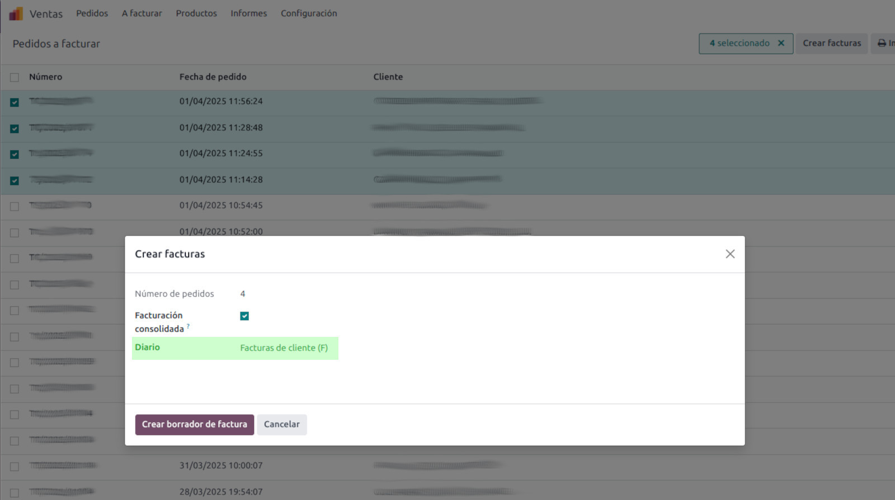

<section class="oe_container">
    <div class="oe_row oe_spaced">
        <h2 class="oe_slogan">Stock Picking Description</h2>
        <h3 class="oe_slogan">Stock movements fully described</h3>
        <p>For each sales or purchase order line, if the order line description has been edited, it is propagated to the stock movements generated. The documents to which this propagation occurs are the stock delivery and receipt documents, as well as the "drop shipping" movement.
        </p>
    <div class="oe_span12">
        <h4>Sale order document</h4>
                                    
        <h4>Stock picking out document</h4>
                                    
    </div>        
    </div>
</section>

